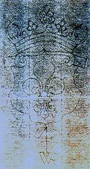

Watermarked papers -- various patterns
Large pot pattern |
Shield pattern |
Shield pattern [2] |
Hand pattern |
Crown pattern |
Small pot pattern
Crown pattern
Crown, Strasbourg lily, WR. Early 18th c.
Full view
Cropped detail
|
Rotated; levels adjusted
|
Inverted
|

Ink masked
|